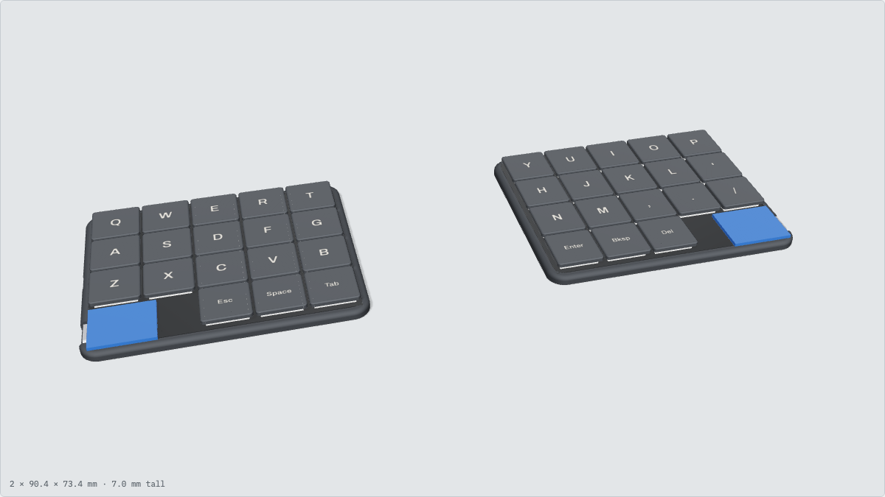
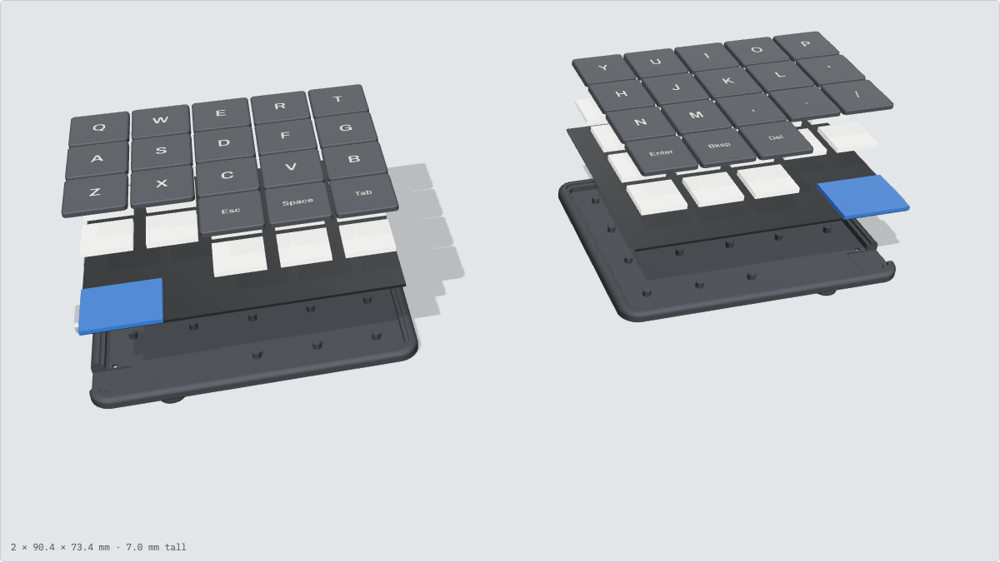
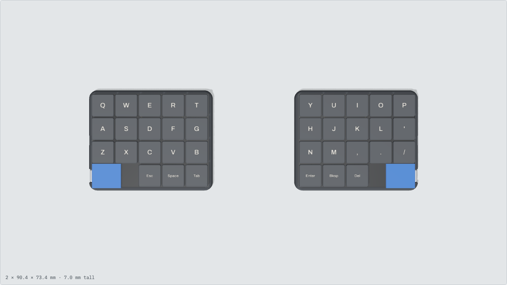
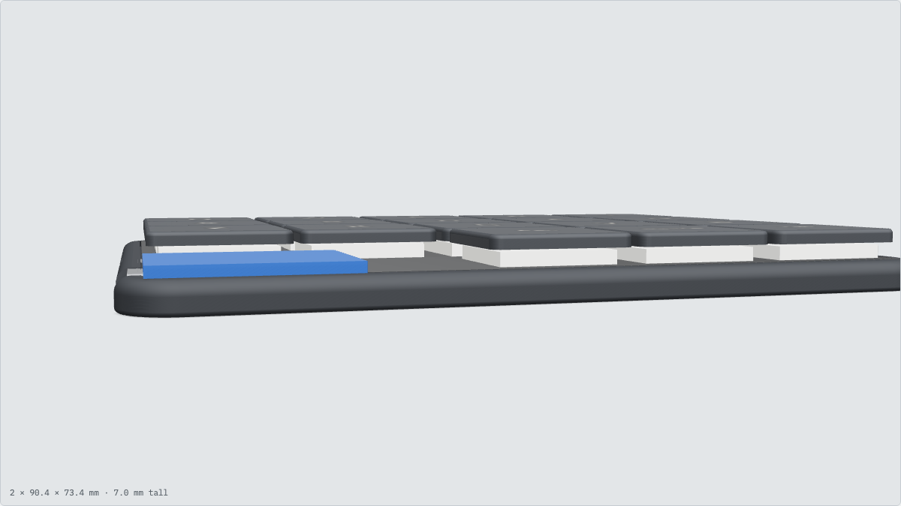
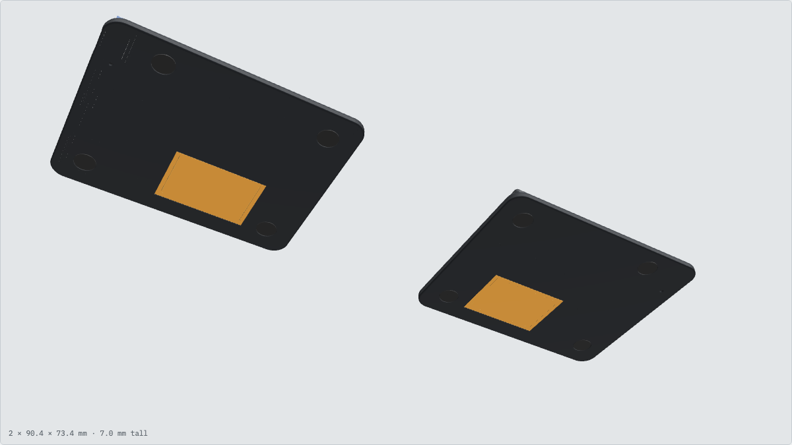
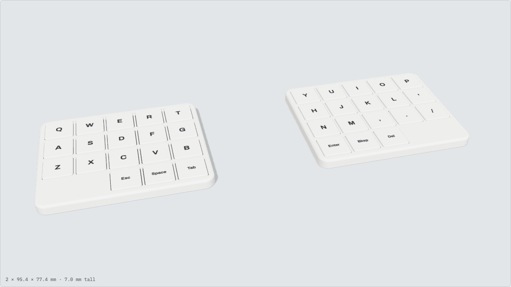
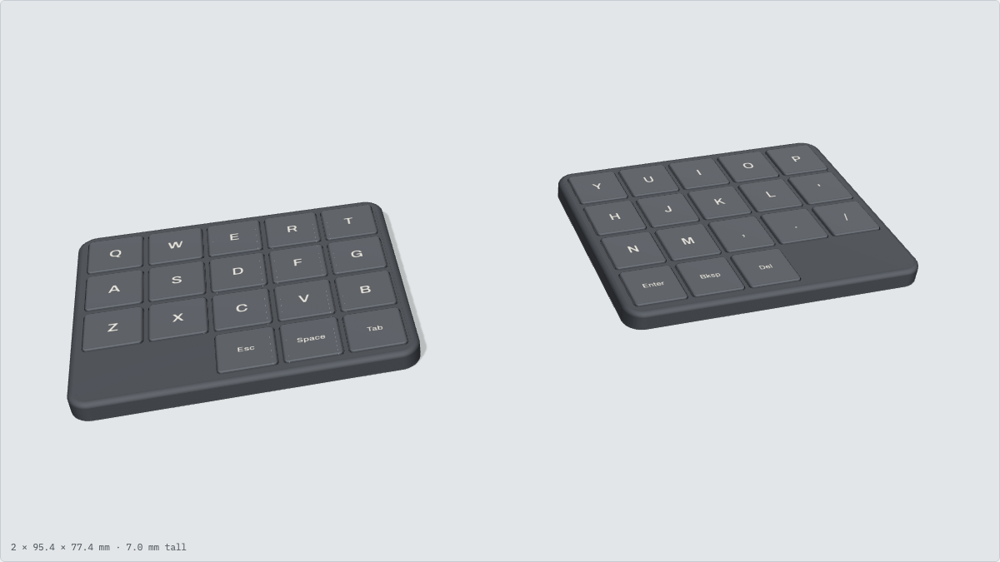
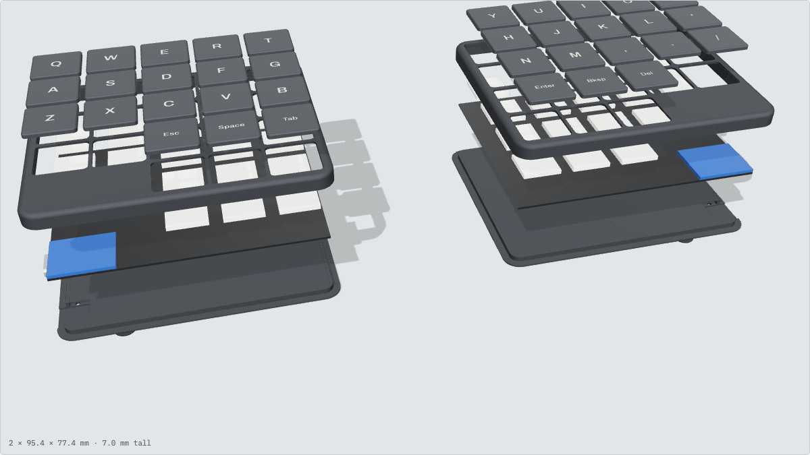
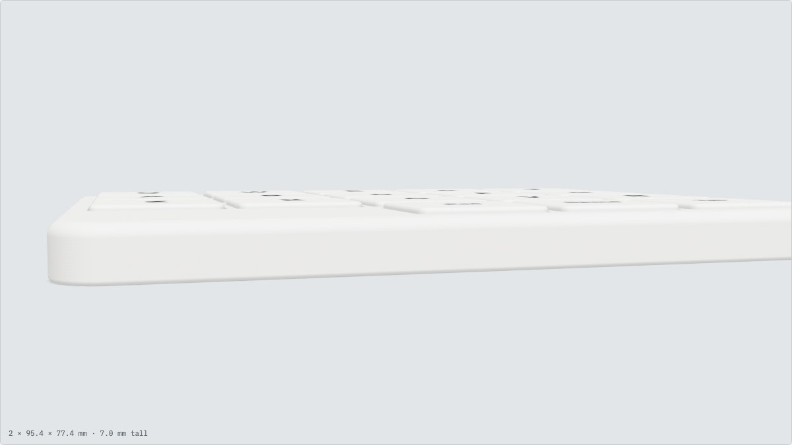

An ultra-thin wireless split, two clean rectangles
A pocketable 36-key keyboard with no row or column stagger. It uses Kailh PG1316S laptop-style butterfly switches, a 0.8 mm reversible PCB and a 3D-printed tray. The target is 7 mm or less from desk to keycap.
Build phases
3D model
Renders of the concept model from cad/keyboard.py. The open tray is the locked design; the enclosed case is a concept at 18 mm pitch. Regenerate the images with node cad/render.mjs.

Open tray views




Enclosed concept




Interactive
Orbit, explode and recolor the model. Loads about 5 MB.
The viewer is cad/viewer/index.html. It fetches the model, so it needs a web server: run python3 -m http.server in the repo root and open localhost:8000/docs/. Opened straight from disk, only the renders work.
00Requirements & decisions
- Thin and portable. 7 mm or less, including keycaps and case. The closest prior build, vuoz/chalk, reaches about 6 mm.
- Pure ortholinear. No row stagger and no column stagger. Each half is a clean rectangle.
- Wireless split with long standby and a rechargeable battery.
- 36 keys. 3×5 alphas plus 3 thumb keys per half.
| Area | Decision | Why |
|---|---|---|
| Switch | Kailh PG1316S | The lowest-profile keyboard switch available (1.8 mm) |
| Controller | Seeed XIAO nRF52840 | Small (21 × 17.8 mm), cheap, has a built-in LiPo charger, works with ZMK, proven with PG1316S in chalk |
| Firmware | ZMK | The standard for wireless splits |
| Thumbs | 4th row, inner 3 columns | Keeps the grid ortholinear. The 2 empty outer slots hold the XIAO |
| Case | 3D-printed open tray, floating keys | Cheap, quick to iterate and the thinnest option. A top deck doesn't fit at 17 mm pitch |
| PCB thickness | 0.8 mm | Needed to reach 7 mm. The tray needs extra support posts |
| Key pitch | 17.0 × 17.0 mm | Leaves about 0.75 mm between the 16.25 × 16.05 mm caps |
| Keycaps | Stock Kailh PG1316S 1U (Holykeebs) | Off the shelf |
| PCB strategy | One reversible PCB | One design and one order covers both halves |
| Solder method | Vias in the switch pads, iron from the back | No hot plate or stencil needed, and rework is easier |
| Frame pads (pad 3) | No net | Easier to hand solder |
| Matrix | 5 × 4, col2row, SOD-323 diodes | The standard XIAO has only 11 GPIO |
| XIAO mounting | Face-down over a PCB cutout | Only its 1.2 mm board stands above the PCB |
| Reset | Floor pinhole plus keymap keys | The onboard button faces the floor. No extra parts |
| Screen | None | Keeps the GPIO free and the battery small |
| Battery | 2.5 mm pouch, ~100 mAh (252030 class) | Fits the 7 mm budget and is hidden under the PCB |
PG1316S switch, from the Kailh datasheet
The switch is surface-mount and very hard to remove once soldered. Buy at least 10 to 15% extra.
Battery
Decision: a 2.5 mm LiPo pouch of about 100 mAh (252030 class, 2.5 × 20 × 30 mm), hidden under the PCB.
- The pouch code reads thickness / width / length, so
252030is 2.5 × 20 × 30 mm. - Choose a cell with a protection PCB and bare leads.
- It's rechargeable over each half's USB-C port. The XIAO charges at 50 mA by default (P0.13 left floating), which is 0.5 C for this cell, so a full charge takes about 2–2.5 hours.
- Expected life with ZMK: roughly 1–3 weeks on the central half and months on the other half. Sleep settings matter more than capacity.
- Rejected: LIR2032 coin cells (they can't take the XIAO's 50 mA charge current), LIR2450 (too thick), and 3.0 mm pouches (they push the height to about 7.3 mm).
Height budget
Remaining checks (do before ordering)
- Battery part. Pick a specific 2.5 mm cell with protection and record its exact L × W × T. Use a 20 × 30 mm placeholder until then.
- XIAO measurements. Measure how far the components and USB-C hang below the XIAO board. This sets the cutout and the floor pocket.
- Keycap height. Measure a Holykeebs cap on a switch to confirm the 7 mm budget.
- Switch footprint. Validate it against the datasheet, then add vias in the pads and make it reversible.
- Reversible XIAO footprint. Add solder jumpers for the power pins, which mirror when the board is flipped.
01Layout & matrix
Each half is 5 columns × 4 rows on a uniform pitch. Keys only, that is 85 × 68 mm at 17 mm pitch. With 0.2 mm clearance and a 2.5 mm wall on each side, a half comes to 90.4 × 73.4 mm. The right half is the same reversible PCB, flipped over.
The XIAO slot is 34 × 17 mm and the XIAO is 21 × 17.8 mm, so it fits lengthwise with about 0.4 mm of overhang above and below. It mounts face-down, with its components and USB-C hanging through a PCB cutout. The USB-C port faces the outer side edge. Check this in the KiCad 3D viewer.
Matrix
- A 5-column × 4-row diode matrix with 18 switches per half.
- That uses 9 GPIO. The XIAO has 11 (D0–D10), which leaves 2 spare.
- Diode direction is col2row, the ZMK default.
- Use 1N4148WS diodes (SOD-323) on the side opposite the switches, with reversible footprints.
- Don't use the NFC pins (P0.09 / P0.10) unless NFC is disabled.
Provisional GPIO map (left half)
| Signal | XIAO pin |
|---|---|
| COL0–COL4 | D0 D1 D2 D3 D4 |
| ROW0–ROW3 | D5 D6 D7 D8 |
| Spare | D9 D10 |
| Battery sense | Internal (P0.31 / P0.14) |
The XIAO pins mirror on the right half; handle that in its firmware overlay, with solder jumpers for the power pins. Finalize the map while routing.
Other parts per half
- Power switch. A small side-actuated slide switch (for example MSK-12C02) in series with BAT+, placed on the outer edge next to USB-C.
- Reset. No extra switch. Use a pinhole in the floor to reach the face-down XIAO's button, plus
&bootloader/&sys_resetkeys in the keymap. - Battery pads. BAT+ and BAT− run to the XIAO's battery pads through the power switch. They face up on the face-down XIAO.
02PCB design
Ergogen generates the key grid, the outlines and a placed but unrouted KiCad board from a YAML file. KiCad handles routing, design-rule checks and export. JLCPCB (or PCBWay) makes the boards.
Footprints
| Part | Source | Notes |
|---|---|---|
| PG1316S switch | Holykeebs .kicad_mod | Check against the datasheet, then convert to an Ergogen footprint |
| Diode SOD-323 | ceoloide diode footprint | Reversible |
| XIAO nRF52840 | Custom, or adapt a community one | 14 castellated pads plus back-side BAT pads |
| Power switch | ceoloide power_switch_smd_side.js | |
| Battery | ceoloide battery_connector_jst_ph_2.js, or bare pads | Bare pads are thinner |
Plated through-holes inside each switch pad, as on the Holykeebs practice board and in chalk, let you hand-solder every switch from underneath with an iron. Decide this before finalizing the footprint.
Steps
- Install the tools. KiCad 9 (8 also works), Node.js LTS and
npm i -g ergogen(version 4.1+). - Write
ergogen/config.yaml. Setkx/kyto 17, add a 5×3 matrix zone and a 3-key thumb zone with no stagger or splay, add outlines for the board, case and battery pocket, and add one reversible PCB withtemplate: kicad8. Then runergogen ergogen/ -o output/. - Set up the board in KiCad. 0.8 mm thick, 2 layers, 1 oz copper, with the JLCPCB design rules. Use 0.2 mm traces (0.25 mm for power) and 0.3 / 0.6 mm vias.
- Route. Columns on the front layer and rows on the back. Add a ground pour on both layers, and keep copper away from the XIAO antenna end. Add M2 holes or keep-outs for the case.
- Check. Run the design-rule check and look at the 3D viewer for collisions. Print the board 1:1 on paper and lay real parts on it.
- Order. Export the Gerbers and drill files. Order 0.8 mm FR4 with an ENIG finish (flatter pads help the switches sit level), quantity 5. One design covers both halves.
03Firmware
You can start this as soon as the GPIO map is settled. Create a zmk-config repo from the ZMK user setup. GitHub Actions builds a .uf2 file for each half.
Custom shield files (boards/shields/<name>/)
| File | Purpose |
|---|---|
| Kconfig.shield | Left and right shield flags |
| Kconfig.defconfig | Keyboard name, split on, left half as central |
| <name>.dtsi | Matrix scan, 36-key transform, physical layout |
| <name>_left/right.overlay | Column pins per side, column offset on the right |
| <name>-layouts.dtsi | Physical layout for ZMK Studio |
| <name>.keymap | Default keymap |
| <name>.zmk.yml | Metadata |
Check the current XIAO board ID in the ZMK docs, because board naming changed with the Zephyr 4.x migration (for example xiao_ble//zmk).
Config
CONFIG_ZMK_SLEEP=y CONFIG_ZMK_IDLE_SLEEP_TIMEOUT=900000 # 15 min to deep sleep CONFIG_ZMK_BLE_EXPERIMENTAL_CONN=y CONFIG_ZMK_SPLIT_BLE_CENTRAL_BATTERY_LEVEL_FETCHING=y CONFIG_ZMK_SPLIT_BLE_CENTRAL_BATTERY_LEVEL_PROXY=y CONFIG_ZMK_STUDIO=y # central side only
- Keymap. Start from a Miryoku- or Callum-style layout with home-row mods and 3 thumbs per side, then adjust it in ZMK Studio without reflashing.
- Flash. Use the
&bootloaderkey, or double-tap reset through the case pinhole on the first flash or if the firmware is broken. Then copy that side's.uf2onto the drive. - Test early. Before the case is done, short each row and column pair with tweezers to confirm every key.
- If pairing sticks. Flash
settings_resetto both halves, then reflash.
04Case
The case is parametric CAD written in code, using build123d (OpenSCAD is an alternative). It imports the Ergogen outline files so it always matches the PCB. Key pitch, PCB thickness, battery size, wall and floor thickness are all parameters.
- Tray. The floor and walls are one piece. The PCB drops in and rests on a ledge around the inside of the wall.
- Retention. 3–4 M2 screws into heat-set inserts, or thin magnets, or a snap lip.
- Support. Ribs or posts under the PCB between the diodes, because the 0.8 mm board flexes. Place them densely, about one per key.
- Cutouts. USB-C on the outer edge (it sits low), the power switch slot, a reset pinhole in the floor, and a floor pocket under the USB-C.
- Battery pocket in the floor. Hold the cell with Kapton tape or thin foam, and never compress it.
- Feet. Rubber feet in recessed pockets, so they add no height.
| Method | Notes |
|---|---|
| Resin (SLA) | Best for 0.8 mm floors and crisp cutouts |
| FDM, 0.2–0.4 mm nozzle | PETG or PLA+, 0.1–0.12 mm layers, printed floor-down |
| JLC3DP / PCBWay | Resin or MJF, once the design is stable |
Print a single-key test coupon and a PCB-edge fit test before printing a full half.
05Assembly & test
The Holykeebs PG1316S practice board is cheap, and these switches are close to impossible to desolder.
- Inspect the bare PCB. Check for shorts between BAT+ and GND, and between VCC and GND.
- Diodes on the back. Check orientation before soldering, and use very little solder.
- XIAO. Solder the castellations flat. Flash the firmware now and confirm it shows up over USB.
- Test the matrix before the switches. Short each switch's pads with tweezers and confirm the key registers.
- Switches. Solder from the far side through the pad vias at 280 °C or less for 3 s or less. Use very little solder, since excess stops the switch sitting flat. Test each column as you finish it.
- Power switch and battery. Check polarity with a multimeter first. BAT− goes to the XIAO's BAT−, and BAT+ goes through the power switch to the XIAO's BAT+.
- Full test on battery. Pairing, every key, battery percentage, sleep and wake.
- Into the case. Fix the battery with Kapton or foam, then fit the PCB and screws.
- Keycaps. Optionally add a 0.5 mm Poron foam layer to quiet them (a tip from chalk).
| Symptom | Likely cause |
|---|---|
| Whole row or column dead | A trace or a XIAO pin joint. Reflow it. |
| One key dead | Diode orientation or a switch pad joint |
| Halves won't pair | Flash settings_reset to both, then reflash the firmware |
Parts list
Quantities cover the full keyboard (both halves). Spares are in brackets.
| Qty | Part | Notes / source |
|---|---|---|
| 2 (+3) | PCB, 0.8 mm FR4, ENIG, reversible | JLCPCB, minimum order 5 |
| 36 (+14) | Kailh PG1316S switch | Holykeebs, 10-packs |
| 36 (+4) | PG1316S keycaps, 1U | Kailh caps via Holykeebs, or 3D-printed |
| 36 (+10) | 1N4148WS diode, SOD-323 | LCSC / AliExpress |
| 2 | Seeed XIAO nRF52840 | Seeed |
| 2 | LiPo pouch, 2.5 mm, ~100 mAh, with protection | 252030 class |
| 2 | SMD side slide power switch | For example MSK-12C02 |
| 8 | M2 × 3 mm screws + heat-set inserts | Or 6 × 1 mm magnets |
| 1 | PG1316S practice board | Holykeebs |
| — | Kapton tape, 0.5 mm Poron foam, thin rubber feet | |
| — | Filament or resin for the case |
Tools: a fine-tip temperature-controlled iron, flux, 0.3–0.5 mm solder, a multimeter, tweezers, calipers and flush cutters.
Resources
Switch & keycaps
Prior builds
- vuoz/chalk: a 42-key PG1316S split on XIAO, about 6 mm thick. The closest reference.
- Chalk on kbd.news
- r/ErgoMechKeyboards. Search for "PG1316".
PCB design
- KiCad
- Ergogen docs and the web playground
- ceoloide/ergogen-footprints (KiCad 8, Ergogen 4.1+)
- infused-kim/kb_ergogen_fp (older, includes 3D models)
- Converting KiCad footprints to Ergogen
- JLCPCB capabilities
Controller, firmware & case
Tools for Claude Code
| Tool | What it lets Claude do |
|---|---|
| kicad-mcp | Inspect your KiCad project, run design-rule checks and pull a parts list. Needs KiCad 9+, Python 3.10+ and uv. |
| build123d-mcp | Build the case in code, render views and measure it, so Claude can see what it designs. |
kicad-cli | Comes with KiCad. Runs checks and exports manufacturing files without opening KiCad. |
ergogen | Regenerates the PCB and outlines from the YAML config. |
gh | Starts and downloads the ZMK firmware builds. |